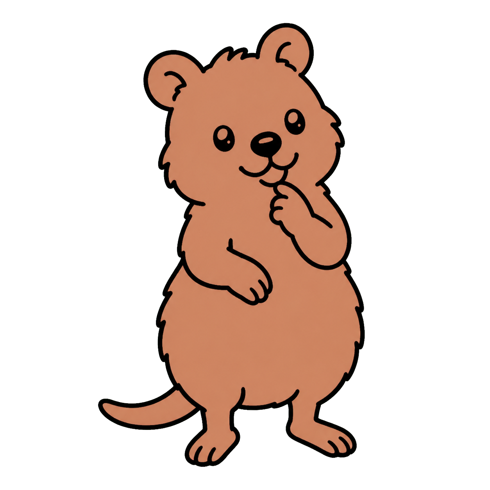
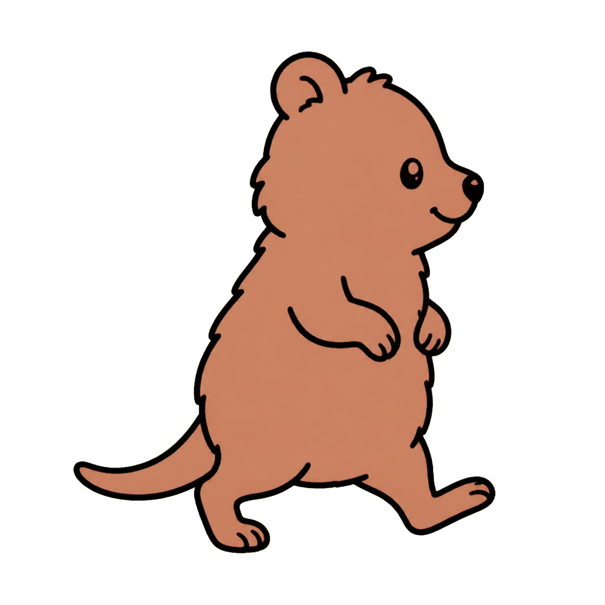
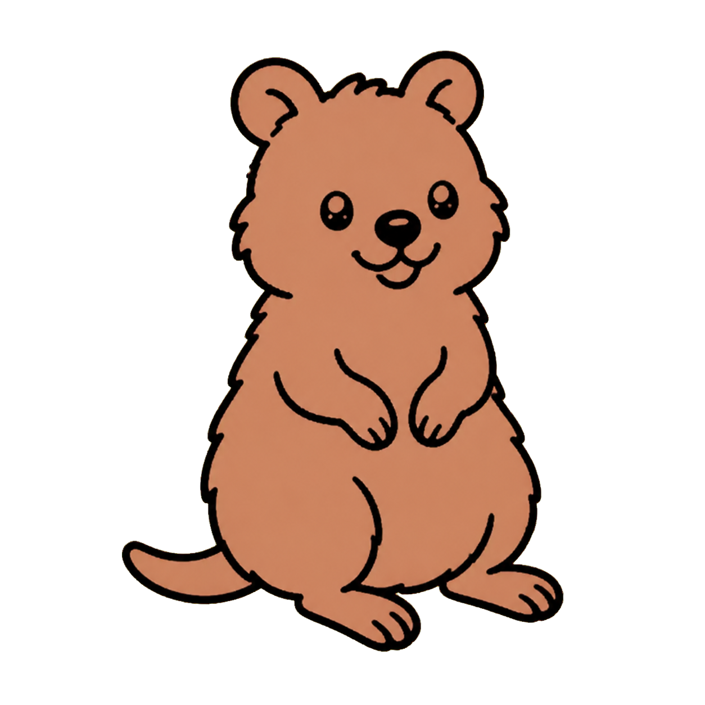
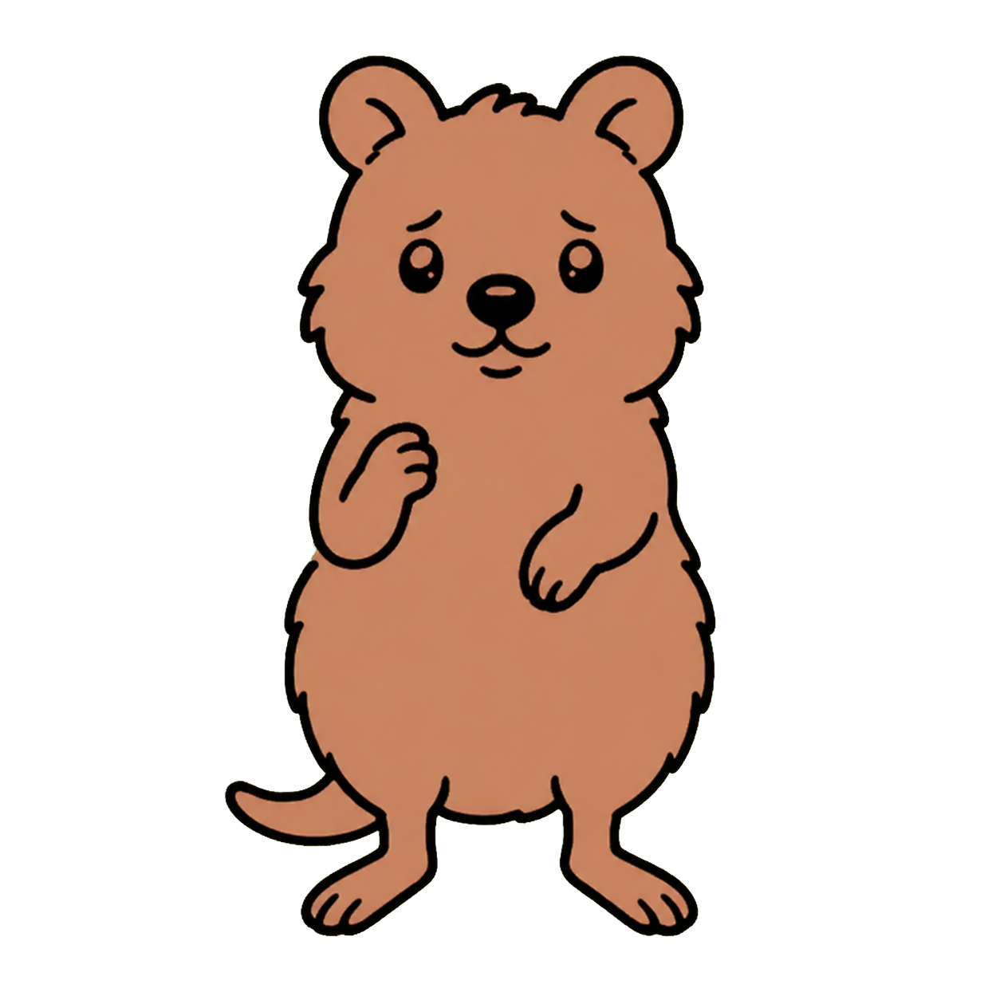
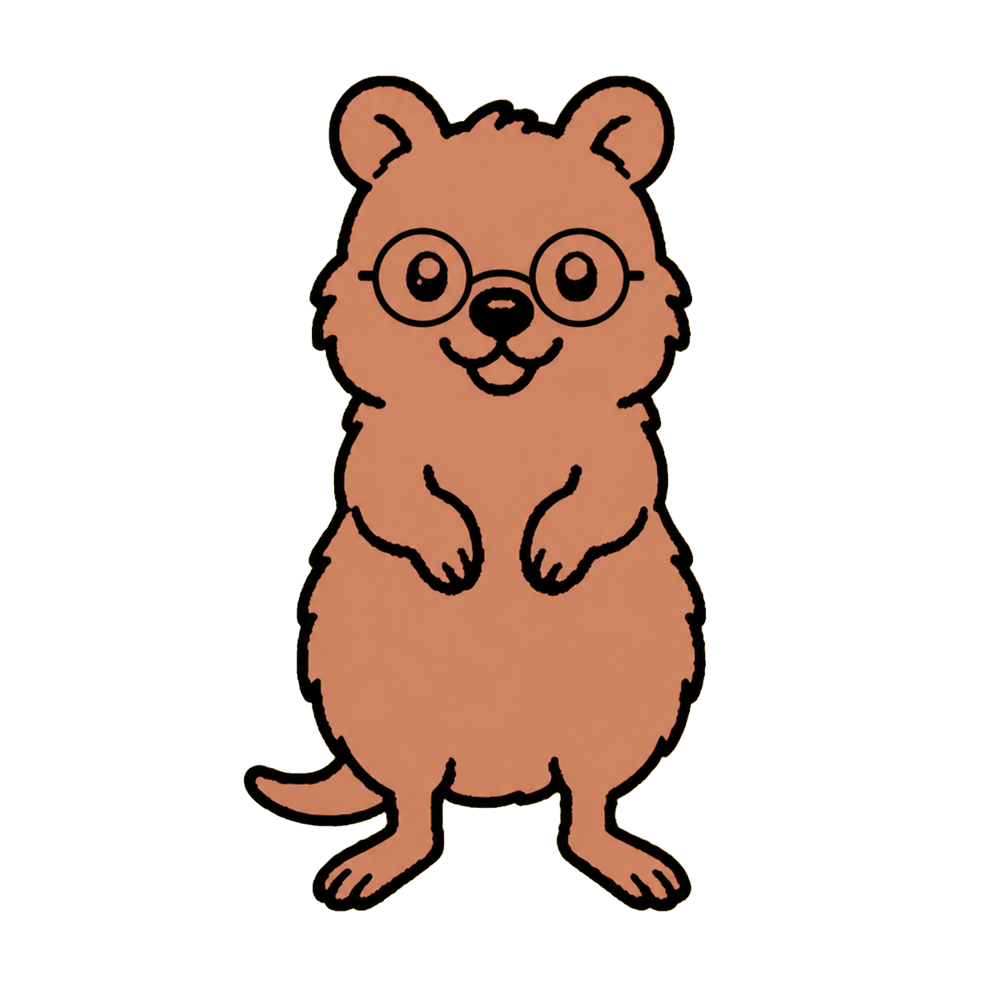

Welcome
New chat, first vault, friendly re-entry.
Character exploration · August 15, 2026
Color can be personal without changing the drawing. New poses can carry meaning without turning Rotli into a cartoon. Accessories stay optional, removable, and outside the logo.

These studies flood-fill the existing closed shapes and place the untouched line drawing above them. Custom color never changes the silhouette, expression, or anatomy.
#C6845F
Rotli would validate contrast against every environment before saving this choice.
One color, four moments. Check the fill against different amounts of visual detail.
The current library covers more states than the interface uses today. The safest expansion is semantic placement before drawing more characters.
New chat, first vault, friendly re-entry.
Appearance preview, neutral companion, no implied status.
Local search, retrieval, or inspecting a vault result.
Librarian summary, note analysis, source review.
Reserved for a visible model step—not an endless idle loop.
Quiet empty state or completed background work.
Newest chat end, successful import, meaningful finish.
These are generated visual hypotheses, not production assets. Approve the pose and feeling; then redraw it into the canonical vector system before it appears in Rotli.

Useful while Rotli is reasoning through a choice or composing a meaningful response.
Best fit · visible reasoning step
A local operation in progress without a spinner becoming the whole personality.

Ask-first naming, voice capture, or any moment where Rotli is waiting for you.

Permission requests and recoverable errors. Concerned enough to clarify, never alarming.
Never use for destructive or security-critical warningsOne accessory at a time. It belongs to the full-body companion only, never the compact mark, tray icon, app icon, or provider identity.

Accessory shapes are concepts. Production should store them as independent vector overlays so body color, pose, and accessory color remain separate choices.
Personality works when it explains state. Repeating the quokka everywhere would make it wallpaper.